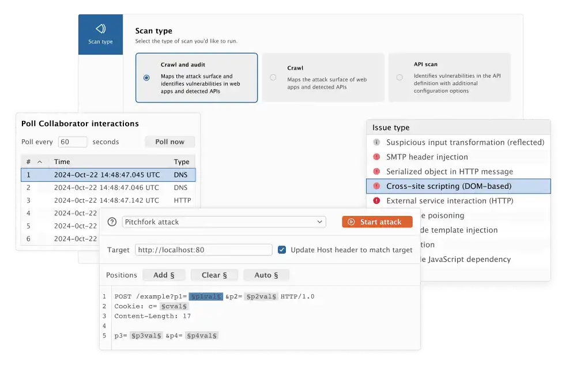
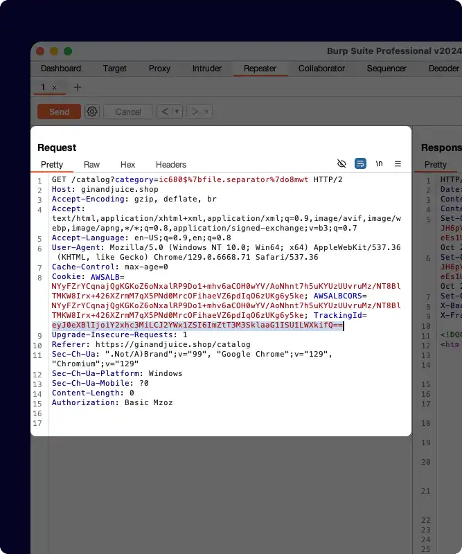
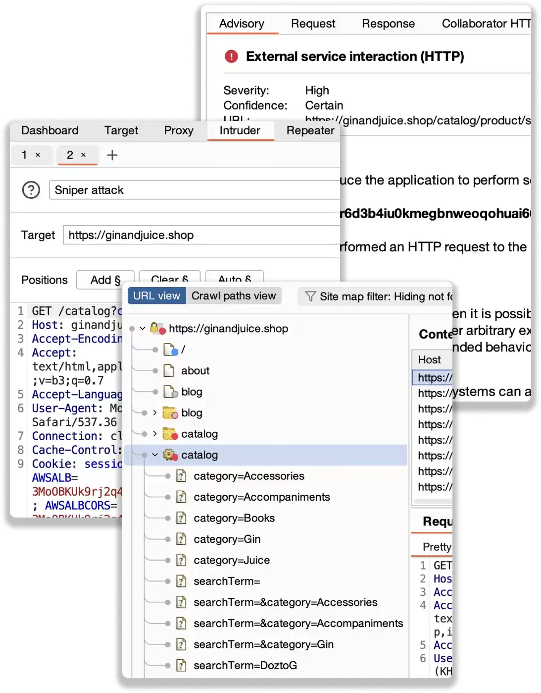
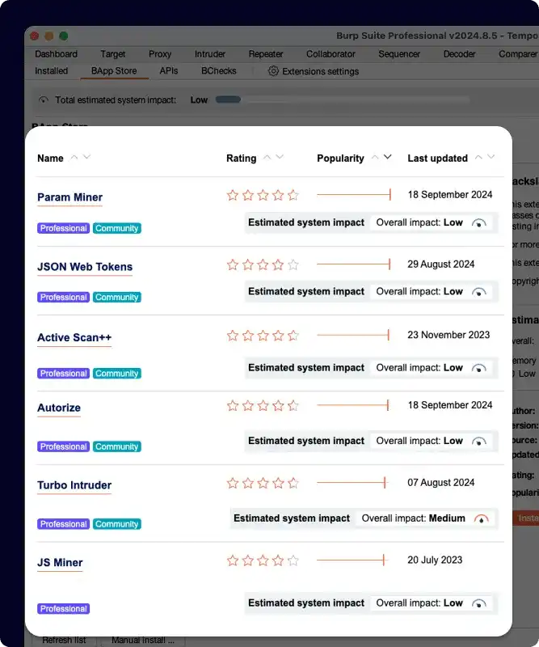

请访问原文链接：Burp Suite 2026.6 (macOS, Linux, Windows) - Web 应用安全测试和扫描 查看最新版。原创作品，转载请保留出处。
作者主页：sysin.org
Burp Suite，功能最全面、使用最广泛的渗透测试工具集，领先的 Web 安全测试工具包。
Burp Suite 简介
Burp Suite 是一套用于 Web 安全测试的高级工具集 —— 将所有功能集成在一个产品中。从基础的拦截代理到先进的 Burp Scanner，使用 Burp Suite，您所需的工具触手可及。
强大的自动化能力让您可以专注于最擅长的工作，而 Burp Suite 则负责处理那些易于实现的检测任务。先进的手动工具能够帮助您识别目标中更加隐蔽的安全盲点。
Burp Suite 由专业研究团队开发，这意味着在每次发布前，最新的研究成果已经融入产品之中。该 Pentesting 工具不仅能提升您的工作效率，还能帮助您掌握最新的攻击向量。

Burp Suite Community Edition vs. Burp Suite Professional
Burp Suite Professional 基于 Burp Suite Community Edition 提供的基础工具集，进一步增强功能，在测试速度和可靠性至关重要时为您提供优势。
基础手动工具集——非常适合学习应用安全（AppSec）。
为应用安全专业人员提供更快、更可靠的安全测试。
Community
- HTTP(s) / WebSockets 代理与历史记录
- 基础工具——Repeater、Decoder、Sequencer 和 Comparer
- Burp Intruder（演示版）
Professional
- 包含 Community Edition 的全部功能，另外还包括以下：
- 项目文件（保存您的工作）
- 编排自定义攻击（Burp Intruder——完整版本）
- Web 漏洞扫描器
- Professional 专属 BApp 扩展
- 搜索功能 (sysin)
- 自动和手动 OAST 测试（Burp Collaborator）
- 自动爬取并发现可测试内容
- 以及更多……
Burp Suite Professional
像专业人士一样进行测试
动手型安全测试人员需要最优秀的工具。值得信赖、可以长时间高效使用，并被其他专业人士广泛认可的工具。
✅ 像专业人士一样测试——使用业内最强大的工具集
发现他人无法发现的漏洞
借助由前沿
PortSwigger Research驱动的唯一工具集，站在 Web 安全测试的最前沿。提升工作效率
Burp Suite Professional 提供现代渗透测试所需的全部工具，利用高级功能有效减少干扰信息。
更轻松地共享您的发现
简化文档编写和修复流程，生成终端用户易于理解和接受的报告 (sysin)。

✅ 渗透测试人员的黄金标准工具集
Discovery：绘制现代 Web 应用复杂攻击面的全貌
使用 Burp Suite Professional 收集情报，全面梳理目标应用结构，并识别初始弱点。
Attack：利用一流的手动与自动化工具识别漏洞
在 Burp 中平衡强大的自动化能力与精细控制。决定哪些测试手动执行，哪些交由
scanner完成。Reporting：自动日志记录提供集中数据来源
所有操作都会被记录，方便您将发现快速整理为简洁且有价值的报告。

✅ 释放 Burp Suite 的强大能力——无与伦比的扩展性
受益于超过 10 年的扩展生态
利用活跃的
BApp store，通过用户创建的扩展为这一强大工具添加自定义功能。创建您自己的功能
构建专属扩展，并与现有工具集成，实现按需使用 (sysin)。
自定义您的工作方式
Burp Suite Professional 支持高度自定义，借助
Bambdas和BChecks按您的方式工作。

250+ BApp 作者
300+ 扩展
Burp Suite Community Edition
免费开启您的 Web 安全测试之旅——下载我们的基础手动工具包。
自动化为您节省时间
将自动化和半自动化流程与手动工具相结合——在节省时间的同时发现更多漏洞。
适用于高负载工作的效率工具
使用由专业测试人员设计和使用的工具集，提高测试、报告和修复的效率。
自定义您的使用体验
一个可高度自定义的工具集。通过 BApp 扩展和强大的 API，在 Burp Suite 自动化功能之上进行扩展。
系统要求
支持最新的 x86_64 和 ARM64 架构的 macOS、Linux 和 Windows 操作系统，建议使用以下主流支持版本：
macOS
Linux
Windows
下载地址
Burp Suite Professional 2026.1, 16 January 2026
百度网盘链接：
[EoD]更新说明：此版本引入了 Discover 选项卡、通过命令面板实现的更快表格导航、更智能的 SQL 注入检测、对 NTLM 的 SPNEGO 支持，以及其他改进内容，同时还包含一次 Java 更新和浏览器升级。
Burp Suite Professional 2026.2, 13 February 2026
百度网盘链接：
[EoD]更新说明：此版本新增了 Organizer 集合及其安全共享功能、Intruder 的请求与响应拆分视图、Proxy 搜索功能，并带来了*性能改进、错误修复以及浏览器升级。
Burp Suite Professional 2026.3, 12 March 2026
百度网盘链接：
[EoD]更新说明：本次发布引入了 自定义 CA 证书支持、主机级 SOCKS 代理绕过、隐藏解码悬浮提示（hover tooltips）的功能，以及一些 bug 修复。
Burp Suite 2026.4, 23 April 2026
百度网盘链接：
[EoD]更新说明：本次发布引入了统一安装程序 (sysin)，同时增强了扩展对 HTTP 流量的控制能力，在 Notes 中支持 Markdown，并在 Organizer 中新增集合级备注功能，此外还包含多项改进和一些问题修复。
Burp Suite 2026.6, 11 June 2026
百度网盘链接：https://pan.baidu.com/s/1N4tgqVMnPbGsEehgESmzKQ?pwd=rgbk
更新说明：此版本更新了内置 Java 运行环境至 Java 26。同时包含了对 Burp Scanner 的改进以及一系列错误修复。
| Architectures/Description | File name |
|---|---|
| Apple Intel x64 Installer | burpsuite_macos_x64_v2026_6.dmg |
| Apple ARM64/M Chips Installer | burpsuite_macos_arm64_v2026_6.dmg |
| Linux x64 Installer | burpsuite_linux_v2026_6.tgz |
| Linux ARM64 Installer | burpsuite_linux_arm64_v2026_6.tgz |
| Windows x64 Installer | burpsuite_windows-x64_v2026_6.exe |
| Windows ARM64 Installer | burpsuite_windows-arm64_v2026_6.exe |
相关产品：Burp Suite Professional 2026.6 - 领先的 Web 渗透测试软件
更多：HTTP 协议与安全

文章用于推荐和分享优秀的软件产品及其相关技术，所有软件默认提供官方原版（免费版或试用版），免费分享。对于部分产品笔者加入了自己的理解和分析，方便学习和研究使用。任何内容若侵犯了您的版权，请联系作者删除。如果您喜欢这篇文章或者觉得它对您有所帮助，或者发现有不当之处，欢迎您发表评论，也欢迎您分享这个网站，或者赞赏一下作者，谢谢！
 支付宝赞赏
支付宝赞赏  微信赞赏
微信赞赏赞赏一下
敬请注册！点击 “登录” - “用户注册”（已知不支持 21.cn/189.cn 邮箱）。 请勿使用联合登录（已关闭）。